No matter what we try to think about, we cannot begin to think until we represent it in some form or fashion. A representation can be thought of as a description or portrayal of something using verbal, written, pictorial, or concrete models that take the place of the original object or idea. The National Council of Teachers of Mathematics (2000) Principles and Standards for School Mathematics (PSSM) describes representation in the following way.
The term representation refers both to process and to product—in other words, to the act of capturing a mathematical concept or relationship in some form and to the form itself (NCTM, 2000, p. 67).
In mathematics, we typically refer to four basic types of representations that we use routinely to describe mathematical concepts or ideas: (1) natural language (written or spoken), (2) numerical, (3) graphical, and (4) symbolic. This is not to say that there are not other representations, but rather these are the most common. Often you will see the last of these expressed as algebraic rather than symbolic. Here we are purposefully calling this form of representation "symbolic" because we wish move away from the societal impression that "algebra" (and in particular, algebraic reasoning) involves only symbolic representations such as \(x^2-3x+2\text{.}\) Despite the fact that many individuals describe algebra as the advanced study of the last three letters of the alphabet, algebra involves all of the four representations listed above. In this section, we will illustrate how multiple representations are used to deepen mathematical understanding. In particular, we will chronicle algebraic reasoning as reported in various research studies using different representational forms and the connections student make among these representations.
Subsection4.5.1Algebraic Operations from a Graphical Approach
For years, the typical approach for dealing with algebraic expressions consisted of memorizing the rules (e.g. distributive property, associative property, etc.) and then practicing these rules to manipulate one expression until it took the form of another expression that gave some new insight into a possible solution or property not easily seen from the old form. For example, consider the solution to a simple equation like \(5x-3=2x+9\text{.}\) Here students learn that they can manipulate this equation into an equivalent equation by adding \(-2x\) and \(3\) to both sides yielding \(5x+\left(-2x\right)-3+3=2x+\left(-2x\right)+9+3\text{.}\) By simplifying this expression, we obtain \(3x=12\) and thus \(\frac{1}{3}\cdot 3x=\frac{1}{3}\cdot 12 \Rightarrow x=4\text{.}\) Now this solution is not new or special. In fact, most of us can relate to this approach and the experiences that lead to it. We may have experienced the use of a balance as a physical interpretation of an equation applying the physical analogues of arithmetic operations to each side of the balance yielding new expressions. While this use of both symbolic and concrete representations helps students make connections among different views of the same mathematical concept, there are still other representations that can help deepen this understanding and also aid students in approaching other concepts that do not lend themselves as easily to symbolic approaches.
Consider an approach to equivalent expressions that has its origin in the graphical representation. Kieran and Sfard (1999) investigated how students dealt with equivalent expressions first introduced through the perspective of functions and their graphs. The argument used was that without having another representational meaning for a linear expression, it is difficult for the student to tie “rules” to an understanding of the concept. In fact, Kieren and Sfard (1999) define understanding as the ability to inspect, talk about, and move between representations of a concept. By this definition, it is not possible to have an understanding without multiple representations.
In order to examine students’ understanding of basic algebraic properties (e.g. distributive), the students were asked to graph linear functions and “add” them in a graphical representation aided by a technological tool in a similar way we have explored in the exercise from Section 4.4 where Liam asks Quinn about quadratics. For example, if one function was stored as \(f_1\left(x\right)=250+50x\) and another as \(f_2\left(x\right)=50+100x\text{,}\) then the student can simply graph \(f_3\left(x\right)=f_1\left(x\right)+f_2\left(x\right)\) (see Figure 4.5.1) and examine the resulting graph and its properties. When comparing the slopes of \(f_1\text{,}\)\(f_2\text{,}\) and \(f_3\) the students deal with the “rule” for the distributive property from a graphical perspective. In an instance cited, a student is able to manipulate the symbolic representation through the use of graphical visualization in his head viewing the various algebraic properties as transformations of points on the graphs.
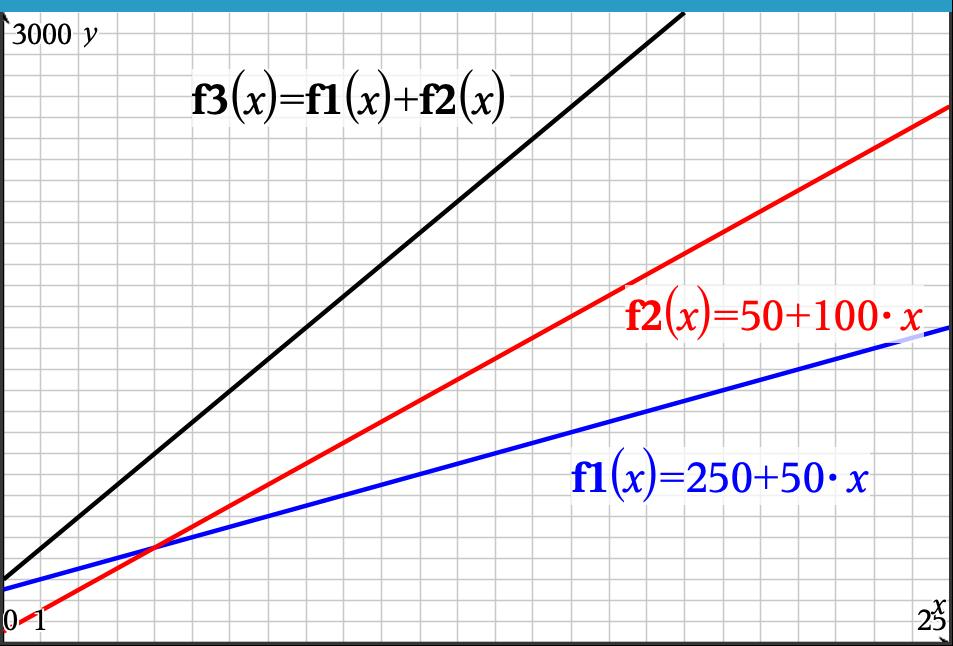
Figure4.5.1.Graphs \(f_1\text{,}\)\(f_2\text{,}\) and \(f_3\) and Connections to Symbolic Forms
The example of Kieren and Sfard’s teaching experiment serves to illustrate the depth of understanding that can happen through the use of multiple representations. While they do not claim that this is a quick fix for all students, they make the argument that for some students it does serve as a tool for making sense of the abstract properties that make up algebra. The challenge is for teachers and curriculum developers to create engaging materials that encourage students to take an active role in sense-making where the movement between various representational forms is required. Some students may have certain representational preferences, but it is still the ability to move flexibly among these representations that defines a depth of understanding.
Subsection4.5.2Linked Representations in Algebra: Developing Symbolic Meaning
What is a root and how is it related to various representations? What does it mean to be a solution to an equation? These are standard questions we expect our students to be able to explain and apply. The problem is that while many students may be able to solve equations, far too many have only procedural knowledge of the equation-solving process. Consider the following explanation posed by Aaron. In question 8 from an interview (Lapp, Ermete, Brackett, & Powell, 2013), when asked to solve the equation \(\left(x-2\right)\left(x+3\right)=6\) (with no graph given), he began by setting each factor equal to 6 (see Figure 4.5.2).
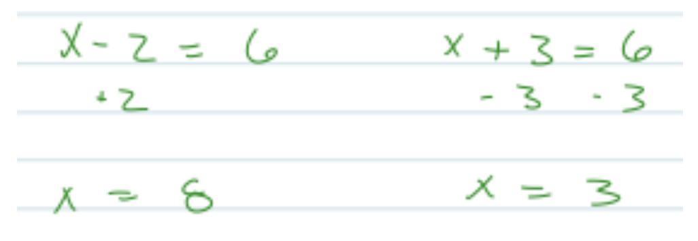
Figure4.5.2.Aaron’s Algebraic Work for Question 8
Aaron: What I would do is have \(x-2=6\) and then \(x+3=6\) (writes \(-3\) under the \(x+3\) and the 6), \(x=3\text{,}\) (writes \(+2\) under the \(x-2\text{,}\) see Figure 4.5.2), \(x=8\text{,}\) so then I have the two solutions…like that...I mean, I don’t know if those approaches are right...I’d have to know exactly where we are at.
Interviewer: What do you mean, where you’re at?
Aaron: Um, what we’re trying to get out of it…out of the equation. What we’re trying to do with it. What we’re trying to do with the numbers we’re trying to find...if we’re trying to find where it’s going to cross on the x-axis...you know.
Interviewer: As opposed to just the solutions?
Aaron: Yeah.
Interviewer: So you are thinking whether or not you are simply trying to find the solutions as an algebraic method versus what does it mean graphically?
Aaron: Yeah. So basically like when I looked at that, it’s like this is just an algebraic expression...you know, just find the answer. As opposed to like over here (referring to question 7, see Figure 4.5.3), I would have tried to figure out what the solution is as opposed to where it is on the graph.
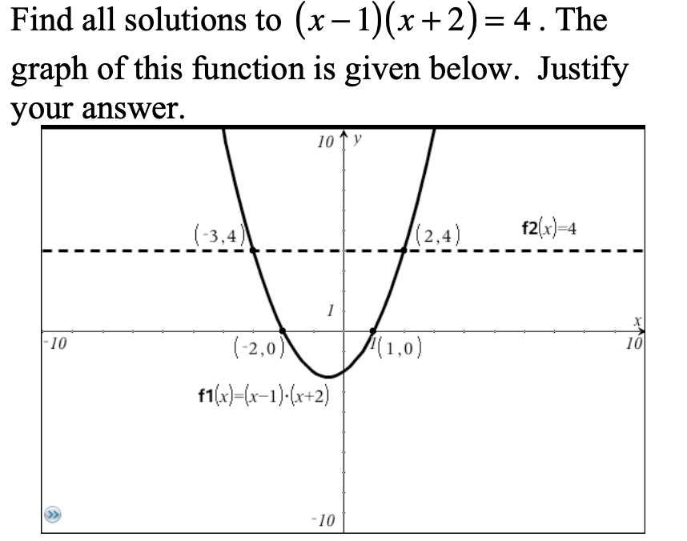
Figure4.5.3.Question 7 from the Interview
Interviewer: So in question 7, the graph being there might have affected your interpretation of what in the problem you were supposed to do?
Aaron: It wouldn’t have been, solve this algebraically. It would have been solve this algebraically for the graph instead of just solving it. Um, so you know if I had finished this out, I would have got something...I would have done something more as break it down as what I just did as opposed to actually solving it out like on 8 (referring to his work from question 8, see Figure 4.5.2).
Interviewer: So what would you have done different on like 7?
Aaron: On 7, I would have put them both equal to 4. So like on 7, it would be \(x-1=4\text{...}\) (continues to write \(x+2=4\) in silence, then writes \(+1\) under one equation and two 2s under the other, see Figure 4.5.4). And then I would’ve been looking at this and like uh oh, something’s not right.
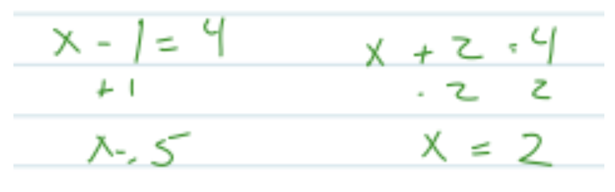
Figure4.5.4.Aaron’s Algebraic Work for Question 7
Interviewer: What would clue you in that something’s not right?
Aaron: The solutions weren’t...the solutions didn’t match.
Interviewer: So what would you expect the solutions to match? For example, the numbers you got were what, 5 and...
Aaron: 5 and 2, and I would expect them to match -2 and 1 (pointing to the x-intercepts on the graph). Um, just because that’s where they cross.
Interviewer: Where they cross the x-axis?
Aaron: Yeah. So looking at this, I would have been like something’s not right. That’s when I would go back and be like try to look through and try to find where that equation looks like that and then apply it to whatever the example is in the book and try to figure out a new answer.
Interviewer: So you are looking for some sort of consistency between the answer you get from algebraic manipulation and the interpretation you would have from looking at the graph?
Aaron: Yep.
Activity4.5.1.Reflecting on Aaron.
Now that we have listened to Aaron’s explanation of his methods and understanding for solving quadratic equations, let’s take a few minutes to reflect on his thinking and how we, as teachers, might react.
(a)
In your groups, share your initial thoughts related to Aaron’s understanding. Summarize your group’s discussion on your whiteboards and be prepared to share.
(b)
In looking at Aaron’s methods in Figure 4.5.2 and Figure 4.5.4, what algebraic concept is he missing and how is it related to solving quadratic equations by factoring?
(c)
Describe why you think his use of both graphical and symbolic perspectives allowed him to identify a problem with his solutions, but still did not prompt him to correct his symbolic approach.
(d)
As a teacher, how would you react to Aaron’s misconceptions? What type of experience might you design as a classroom activity to address this common mistake?
Having given some initial thought to Aaron’s approach and understanding, it is time to take a deeper dive into his misconceptions and what the research says about multiple representations. Aaron continued to try and find resolution between his algebraic solutions and his expectations that these solutions should correspond to the x-intercepts from the graph, but he was unsuccessful in resolving the issue and gave up. Why was Aaron unable to see the error in his solution process even though he did attempt to use multiple representations when a graph was provided? Since the instructor regularly made it a point to use multiple representations in solving equations during class, it is not surprising that Aaron would seek confirmation when the graph is present; however, it is not just the use of multiple representations that helps students make connections. It really has more to do with how these representations are interfaced.
It is important to note that during this particular semester, the students used a basic graphing calculator (TI-84) that did not have dynamically connected representations and thus Aaron did not have the ability to see a “real-time” linkage between the key features of the graph and their corresponding algebraic counterparts from the symbolic world. Through research on the use of microcomputer-based laboratory (MBL) technology (also calculator-based data collection devices), we have seen that real-time changes in linked representations simultaneously visible in the same field of view, allows students to make connections among corresponding features of the various representations (Lapp & Cyrus, 2000; Beichner, 1990; Brasell, 1987). While Aaron had access to the use of multiple representations, these representations were not dynamically linked and thus he did not make a connection between the meaning of the graphical representation of x-intercepts and the zero property of multiplication as a technique for equation solving. To discuss the specifics of the experiences we can give students to foster this transfer, we first must consider the dynamics of how symbolic meaning comes to be.
One of the powerful aspects of mathematics is its use of symbolization. On the other hand, from the aspect of the learner, one of its worst obstacles is its symbolization. Since the early development of mathematics, power has come from the development of symbol systems used to describe the concepts that are fundamental to furthering mathematical knowledge. The encapsulation of big ideas, that before took pages and pages to communicate, into smaller collections of symbols allows the reader to see various stages of arguments within one field of view. However, from a learner’s perspective, it is the unpacking of the symbolization that poses a significant hurdle in the development of conceptual understanding.
If we think of this in terms of concept image and concept definition (Tall & Vinner, 1981), a small collection of symbols typically elicits much more information than could be contained in paragraphs of written prose. For example, suppose we say the word “dog”. What comes to mind? It might likely be a mental image of a beloved pet from your childhood or an image of a traumatic event you had with a strange animal while walking last week. These images are far more complex than the simple three letters “dog” or a formal definition from Webster’s dictionary. It is our experiences that are connected to the compact system of symbols “dog” that form our concept image of a dog. Similarly, it is the experiences that a student has between mathematical ideas and the symbols that represent them that determine her/his concept image.
So how does the use of symbol systems influence our learning, and even more, our development of new ideas? Recall that Kaput, Blanton, and Moreno (2008) propose a model Figure 1.1.5 that describes how we develop both our understanding of existing ideas as well as the creation new concepts. The key to this model is the communication and analysis between two worlds. One is the "real world" (i.e. the world of either broader mathematical or physical experiences) and the other is the world of the symbols that we use to represent these "real world" experiences. In this model, the learner creates raw representations of ideas and in turn these representations provide the learner with a tool to reason about these ideas. As the learner uses these raw representations for reasoning, they begin to view the "real world" experiences differently as the representations serve as a lens through which reality is filtered. As this process progresses, new, more refined representations and symbols are created influencing both the tools used for reasoning as well as the learner’s view of the real world itself.
It is important to note that this process, while focusing on representations, is consistent with Sfard’s (1991) process of interiorization, condensation, and reification where concepts become internalized through interaction with the various natures of the mathematical ideas. In some ways, the use of technology here reduces the length of time for Sfard’s interiorization and facilitates the condensation process. Alleviating the computational load can also keep the lack of procedural fluency from becoming a cognitive obstacle to reaching condensation or reification as observed by Lapp, Nyman, and Berry (2010).
Given this theoretical model for the development of symbolic meaning, the next question is how do we create experiences that allow our students to move fluidly among various representations while maintaining an isomorphic mapping (see what I did there — wink) of meaning between various worlds used to represent the ideas involved? One way is to utilize technology that allows for linked representations. In other words, representations that dynamically update in real time as each is manipulated.
In the same study as Aaron, in contrast to the Fall semester’s class using only basic graphing technology, the students interviewed in the Spring semester showed an ability to move among representations as a means for justifying their reasoning. To illustrate this process, we examine Jon’s response to the same question posed to Aaron, namely, solving the equation \(\left(x-2\right)\left(x+3\right)=6\text{.}\) Unlike students from the previous semester, Jon realized that he must get the equation set equal to zero by subtracting 6 from both sides. In this exchange, Jon refers to his solutions to other problems referring to problems 6 and 7 (Figure 4.5.5).
Interviewer: So what do you think is different about this? Why is it important that you get the six to the other side?
Jon: Because I think if you were to graph it, you’re trying to find a completely different line, if it’s a six or zero and if it’s zero... You’re trying to find \(y\text{.}\) And then if \(y\) was zero... I don’t know.
Interviewer: So you’re thinking of it from a graphical standpoint?
Jon: Yeah, I’m thinking about it from a graph. If it’s equal to six it’s going to be up higher and it’s gonna be... You’re not looking for the zeros [points to problems 6 and 7 from the earlier questions].
Interviewer: So kind of like the difference in those earlier problems?
Jon: Basically I took number seven and tried to turn it more into like number six. Like I tried... I just moved it down so that way I would be able to solve for it. I visualized it as more like bringing it down and I just solved for the vertex [here he said vertex, but was referring to the zeros], which I know how to do. When it comes to that, it’s more complicated to get to that point.
Interviewer: Oh, the x-intercepts you mean, as opposed to the vertex?
Jon: Yeah cause when it’s at equals six, it’s like the whole thing got raised six. So I just made it...I brought it down to the vertex...and then I just solved for it there because that’s easier for me to do algebraically.
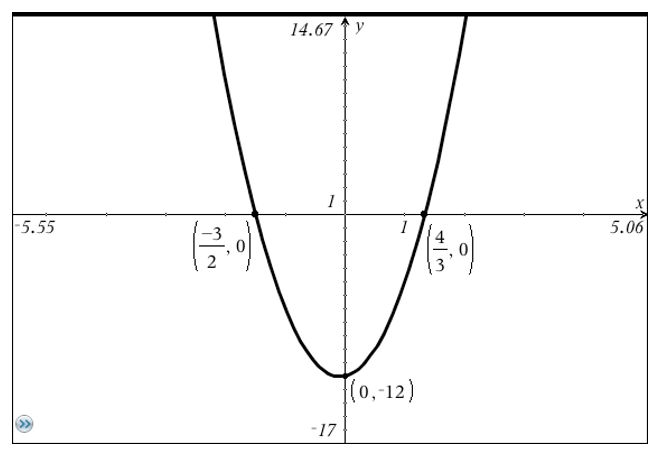
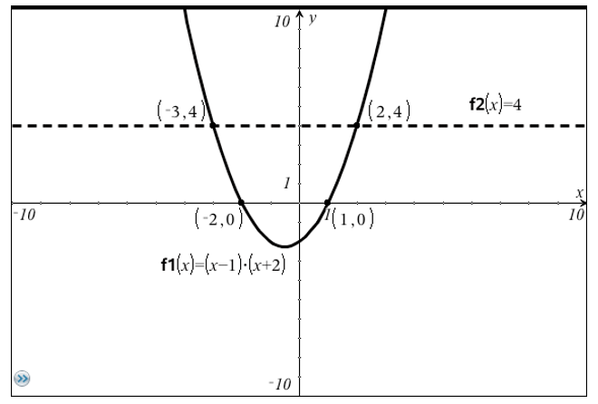
Figure4.5.5.Graphs from Jon’s Problem 6 & 7 Respectively
In this case, Jon had first been exposed to dynamically linked representations through technologically rich investigations in class. In one investigation the manipulation of a graph gave real time change in the algebraic representation of the quadratic function as well as the factored form of the function. Jon was asked to label the x-intercepts on the graph and as the graph was manipulated, he noticed a connection between the numerical values of the x-coordinates of the x-intercepts and the numerical values, \(r_1\) and \(r_2\) found in the factored form of the function \(a\left(x-r_1\right)\left(x-r_2\right)\) (see Figure 4.5.6).
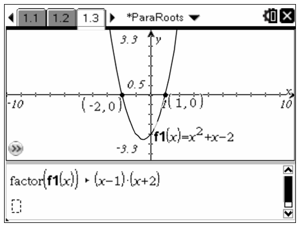
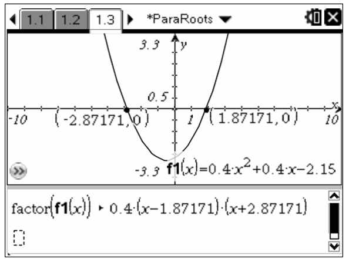
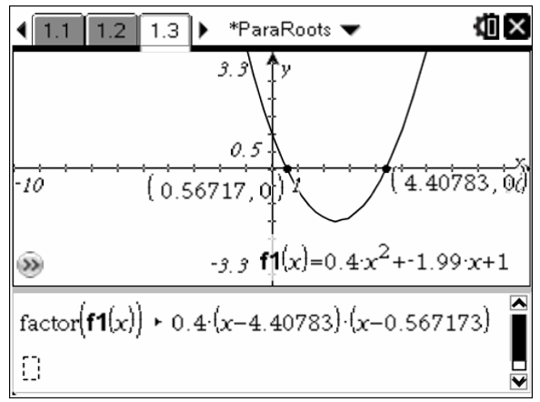
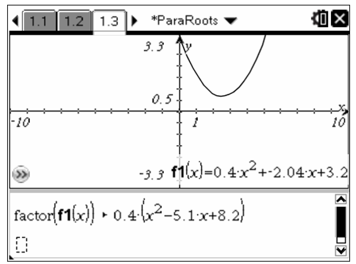
Figure4.5.6.Dynamically Linked Algebraic and Graphical Zeros
The mind of the student naturally seeks out aspects of a situation that are invariant across representations. In this case, the student noticed that no matter how the graph was manipulated the numerical values in both the labeled x-intercepts and the factored form of the function remained related. The classroom investigation also asked questions designed to focus the student’s attention on the effects on the function’s output for entering each x-coordinate of the zeros into the factored form of the function as well as the values of each factor. It was this combination (communication and analysis between symbolic worlds) that enabled the student to articulate the reason for use of factoring as a technique for equation solving and the reason that it is imperative the equation be set equal to zero before factoring.
In another investigation, the students developed a connection between algebraic and graphical representations for the process of completing the square and observed relationships among various parameters found in the algebraic expressions (see Figure 4.5.7). Here the students further experienced the connection between both algebraic and graphical transformations. This led to Jon’s strategy of transforming the graph of a parabola and its intersection with a horizontal line above the x-axis into one where the parabola was shifted down until the horizontal line was superimposed with the x-axis. In his desire to transform an equation by subtracting 6 from both sides, he expressed a graphical understanding linked to the algebraic transformation of subtracting 6. He stated that he was essentially moving the dotted line (see Figure 4.5.5) down to coincide with the x-axis so that he could use his technique of factoring that required the equation to be set equal to zero. In this instance, he was able to justify his process and not just procedurally execute it.
The influence of the Completing the Square (see Figure 4.5.7) investigation can also be seen in Jon’s reference to the movement of the parabola’s vertex during his verbal description of his graphical understanding. In the Completing the Square activity, the students were specifically asked to follow the movement of the vertex.
Jon clearly demonstrated an understanding of the concept of root and its connection to factoring as an equation solving technique. In explaining why he could not simply set each factor equal to zero in the equation \(\left(x-2\right)\left(x+3\right)=6\) he states,
If I plug 2 into the first one, two minus two that would give me zero and zero times anything would equal zero, not 6 so that’s wrong. Then if I plug negative three in, negative three minus 2 would be negative one and then the second one [referring to the second factor] would still be zero so negative one doesn’t equal six either [meaning entering -1 into the equation] so that would be wrong too.
The fact that Jon could articulate an understanding of the root solving process along with his verbal reference to the vertex movement indicates an influence of both of these investigations on his mathematical understanding and its relationship to both the symbolic and graphical worlds that describe these ideas and the connections between them.
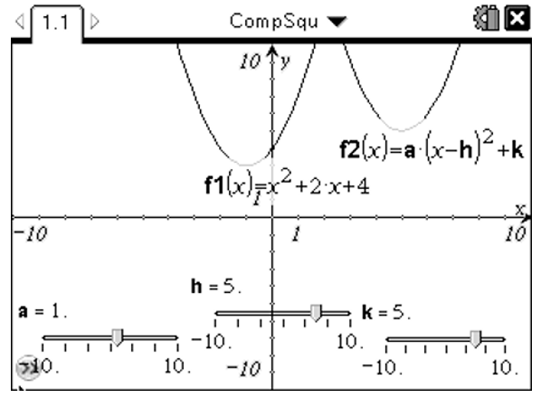
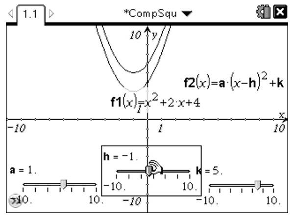
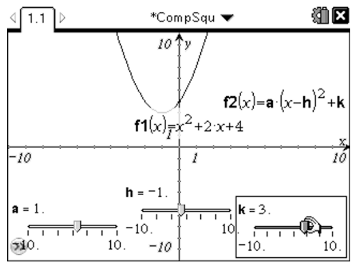
Figure4.5.7.Dynamic Manipulation of Parabolas for Completing the Square
As the student experiences described above suggest, it is important for teachers to provide opportunities that allow the learner to interact with mathematical ideas using multiple representations that are linked so that the manipulation of one affects the other. In addition, the student needs to be given some autonomy in the manipulation process so the they can do some "what-ifing" as they navigate the discovery process. The description above took place with students in an algebra class, but how might this play out with younger students?
Subsection4.5.3Linked Representations: How Low Can We Go?
As we consider the role linked representations might play in the development of mathematical concepts with younger students, it is important to note the Kaput, Blanton, & Moreno’s (2008) model we described in Figure 1.1.5 comes from the book, Algebra in the Early Grades. While this model for the development of symbolic meaning is useful in secondary and university education, it began as a way to describe the acquisition of symbolic meaning with elementary students. Therefore, it only makes sense that young learners can also take advantage of linked representations to understand mathematics.
In the elementary classroom, mathematical representation has traditionally been dominated by numerical, physical, and iconic forms. However, in more recent years technology has brought graphical representations into a more prominent role. The NCTM Principles and Standards (NCTM, 2000) placed strong emphasis on graphical representations (even at the elementary level) and the Common Core State Standards continued this emphasis. In fact, even the almost three-decade old electronic version of the Principles and Standards included interactive graphical representations that teachers and students could use to explore problem solving from a graphical perspective. So how does the advent of technology impact the teaching of graphical representations for younger children? Consider the following case where 21 \(1^{st}\) Grade students used the MBL technology described by Lapp & Cyrus (2000) to explore temperature change and the connection to its graphical representation.
To begin, the students were given a demonstration of the TI-73 and CBL™ devices in two basic modes. The first mode was the gauge where the temperature is represented either as a bar meter or as a needle meter (see Figure 4.5.8). The graphical representation followed with the teacher showing how to operate the graphing calculator and CBL™ using the CBL/CBR application built into the TI-73. The students were already familiar with the TI-73 at this time since they had been using it for other mathematical explorations for about a month prior (once per week); however, they had never used the CBL prior to this investigation. Following the brief demonstration by the teacher, the students worked in groups of three and were given 15 minutes to “play” with the devices where they simply explored the cause and affect relationships by doing different things to the temperature probes and watching what happened. This allowed them a safe environment to experiment and become familiar with the operations of the CBL.
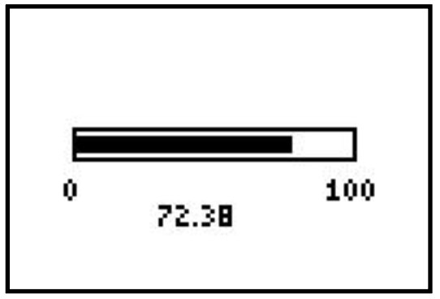
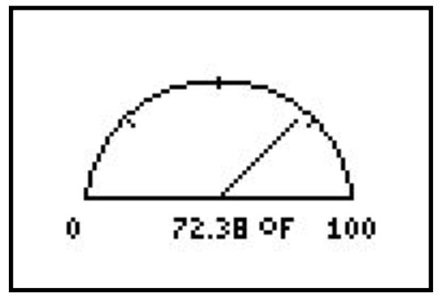
Figure4.5.8.CBL Meter Display on the TI-73
After the “warm-up”, each group of students was given a cup of ice water and a transparency overlay of a temperature-time graph cut to fit their TI-73 view screen. The graph given to them is shown in Figure 4.5.9. The challenge was to reproduce the graph by collecting temperature data and graphing it in real time using the cup of ice water as well as any other means they saw fit for changing the temperature.
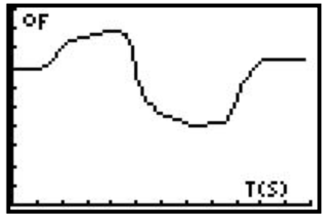
Figure4.5.9.Target Graph for Students to Reproduce
In Figure 4.5.10, students can be seen using various methods for changing the temperature to create their graphs.
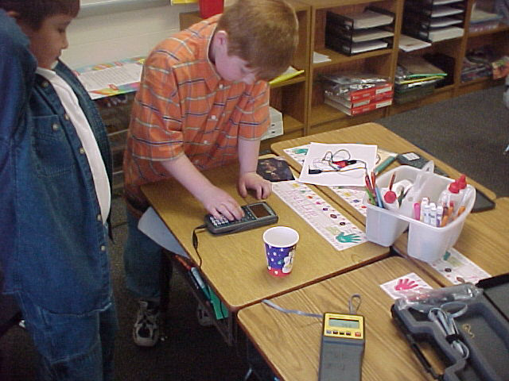
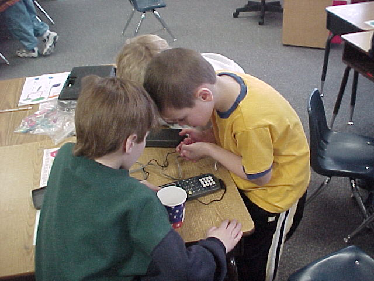
Figure4.5.10.Students Creating Their Graphs
Typically the students used three methods for changing the temperature. They either placed the probe in the cup of ice water, left it exposed to the air, or placed it in their hands or under their armpit. The students were allowed to repeat the 60 second data collection experiment as many times as they liked until they were content with their graph. However, they were aware that once they began to collect data again their previous graph was lost. Within 10 minutes, all 7 groups of students had obtained graphs that pleased them. In addition, 5 of the seven groups (Groups 1, 2, 3, 4, and 6) of students obtained graphs very close to the given graph (see Figure 4.5.11).
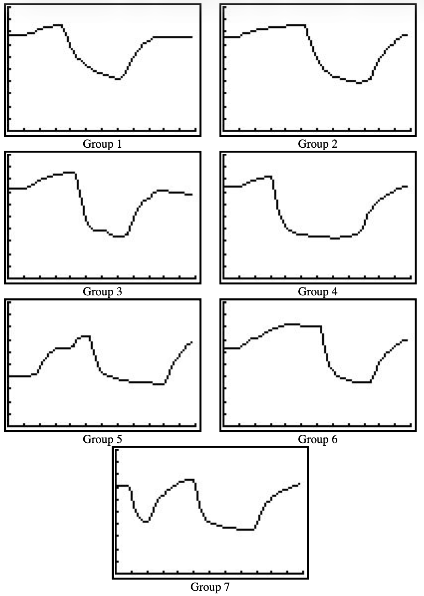
Figure4.5.11.Results of the Groups’ Data Collection
To illustrate how close the graphs came to the original, Figure 4.5.12 shows the graph produced by Group 1 superimposed on the original graph.
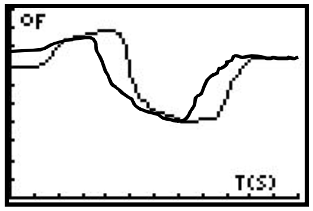
Figure4.5.12.Group 1 Graph Superimposed over Target Graph
After the students had obtained their graphs, they were asked to look at their graphs and describe what they physically did to produce the graph. The descriptions of their process gave interesting insights into how they were linking the physical experience to the graph. In discussing the process used to create the graphs, the students did not give any reference to time. Instead, they gave the steps used in sequential order. The teacher wrote the process on the board in a numbered fashion. Typical responses were:
Let it sit.
Put it in your hand.
Put it in the water.
Put it in your hand.
Let it sit.
Once the students described their processes using natural language, they were given them another graph and asked to describe a process for producing it (see Figure 4.5.13). In this case they were not allowed to use the CBL device. Instead they were expected to take the previous experience and transfer it to a new situation.The responses were very interesting. In fact, the responses suggest an ability to connect the graphical properties of the representation to the understanding of the physical event. It is not to suggest that this group of first graders necessarily possess a deep understanding of the formal definition of the slope of a graph; however, the responses do suggest an understanding of the meaning of the graphical representation for the relationship between temperature and time and connections between the graph and the physical event.
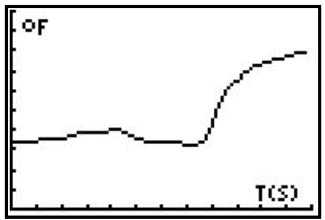
Figure4.5.13.Describing Graph Production without CBL
It should also be noted that student understanding of information portrayed by a scatter plot had been developing slowly during the course of the school year. The CBL™ activity took place during the spring of the year while the students had been manually plotting temperature from the beginning of the school year. Starting from early in the school year, a student would be selected from the class to go outside and read the thermometer at the school. Then they would come in and plot the temperature on a grid sheet corresponding to the day along the horizontal axis and temperature along the vertical axis (see Figure 4.5.14). This experience of daily plotting a data point helped the students make sense of the temperature-time graph produced in real time via the CBL.
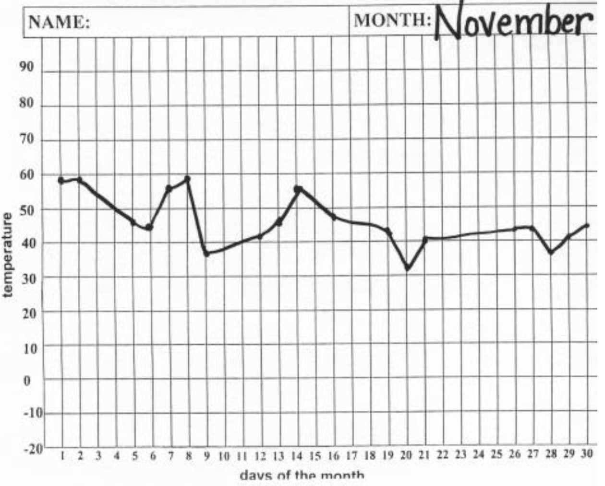
Figure4.5.14.Hand Graph of Temperature Data
The fact that the students could understand the meaning of the graphical representation as it relates to temperature as a function of time was not too surprising considering the slow development of this concept over the school year. However, what was particularly surprising was the ability to relate the CBL experience to the graphical representation of rate of change. The relationship to rate of change became apparent during the discussion of the second graph following the graph reproduction exercise. Recall that the students were asked to describe a process that would result in the graph given in Figure 4.5.13. The steps in the process described by the students were as follows.
Start with it in the water for a little bit.
Hold it in the air.
Put it back in the water.
Put it in your hand.
When given these responses, students were asked several questions. First they were asked why they chose to start in the water. One student replied, “It starts down low and doesn’t go up or down at the beginning.” Here she seemed to show an understanding that a horizontal graph came about due to a lack of variation in the temperature as well as a connection to the relative height of the graph on the vertical axis.
Students were then asked why at one part of the process they wanted to hold the probe in the air while at another part they wanted to hold it in their hand? One student responded, “We want it to go up faster in the second part.” Another student stated, “Yeah, the second going up needs to be steep.” Here the students appear to be making a connection between the relative visual steepness of the graph and rate of change of the temperature. What was the most surprising was that the students were making these connections after only a short encounter with the data collection devices.
Before begining this experience we were curious how children as young as first grade would respond to the use of data collection devices. We figured that some of them might be able to reproduce the given graph, but we did not anticipate that they would be able to verbalize an informal understanding of rate of change. As new technology evolves, we as teachers must not underestimate young children’s ability to accept and use these technologies. Devices that allow representations that were previously thought of as middle or high school topics (note the TI-73 used here is designed as a middle grades calculator) to become accessible to younger learners as well. Even technology like data collection devices are not too sophisticated for young learners provided the interface is user-friendly.
It is important to remember that in the elementary grades we are preparing children for more advanced study. By giving them experiences that require a process of gradual abstraction, we are preparing them to use multiple representations in working with mathematical concepts. Students will be expected to use multiple approaches to problem solving as they progress through mathematics and experiences like these allow them to feel comfortable to explore and not simply wait for the teacher to tell them the answer or show “the” way to solve a problem. Building autonomy for students in learning mathematics is essential if we want to educate problem solvers. Exploration experiences are key to building this autonomy.
Subsection4.5.4Summary
The bottom line of these examples is that we should not have to only expect procedural fluency, but rather that conceptual understanding can go hand-in-hand with procedural ability. These examples challenge the conventional wisdom that students must first become procedurally fluent before they come to understand the concepts that we teach. Heid (1988) more than three decades ago challenged this position and argued that we should rethink the sequencing of skills and concepts in Calculus by using computer algebra systems to develop concepts prior to teaching procedures. Here we see this same principle applied to high school algebra concepts and even elementary school graphical understanding. The difference between the algebra study described above and highlighted by the example with first graders in comparison with Heid’s research is that we suggest it is not just the computer algebra system or data collection technology that influences student connection of concepts, but rather the dynamic linking of various representations. The students in the first semester of the Lapp, Ermete, Brackett, and Powell (2013) study used the TI-84 and did have the development of concepts prior to skills; however, they did not have the ability to see various paired representations and see real time effects among representations. The first graders also had the ability to see the effects on the graphical representation when the physical event changed.
A second aspect of concept development that we noticed involves student control of the environment. As Lapp & Cyrus (2000) from research on the use of data collection devices as well as Lapp, Ermete, Brackett, & Powell (2013) experience within a CAS microworld suggest, the student’s ability to manipulate the environment plays a significant role in making connections. During the first semester of the algebra study, the instructor merely demonstrated some of the dynamically linked representations using a computer during class since the students did not have use of this technology individually. Results of the interviews showed that none of these students could articulate connections among various representations. However, during the second semester, each student had a TI-Nspire CAS device and used it during student-centered investigations. We argue that it was this ability to communicate and analyze via dynamically connected representations between the symbolic world and the world of mathematical ideas that allowed the students make connections between concepts and procedures. Similarly, the first graders also had control of the events and were even given "play" time before the investigation in order to develop an intuition of the cause-effect relationship between the physical events and the graphical representation. It is this ability to control the environment paired with the real-time expression of the representations within the same field of view that performs the double-arrowed role in Kaput, Blanton, & Moreno’s model (Figure 1.1.5) labeled as, "Analyzed & Communicated" between the different worlds of representations.
As technology that links representations has become readily available, there is no reason we should not take advantage of it to better develop students’ mathematical understanding; however, technology alone cannot make these connections for students. Kaput Blanton, and Moreno (2008) as well as Sfard (2008) suggest that it is the students’ negotiation or discourse between the symbolic world and the world of mathematical ideas that plays a key role in the development of symbolic meaning. Therefore, as teachers, we need to use appropriate technology to engage students in investigations that allow them to make mathematically meaningful observations and justify them.
Exercises4.5.5Exercises
1.
In this exercise, we will consider ways we could address Aaron’s misconceptions from Activity 4.5.1. In this activity, you will use both algebraic and graphical representations simultaneously to solve quadratic equations and make observations about the graphs and symbolic form of the equations. In addition, you will make use of the Computer Algebra System (CAS) built into the TI-Nspire™ CAS handheld to look for patterns across the representations. One way the CAS is useful is that it enables you to see more than one representation of mathematical ideas on the same page allowing you to see how changes in one representation influence the changes in another representation.
For example, we could have a graphical and symbolic representation of a parabola on the same page. Take the function \(f\left(x\right)=x^2-1\) pictured below. Here we can see both the graph and the factored form of the function’s algebraic expression on the same page.
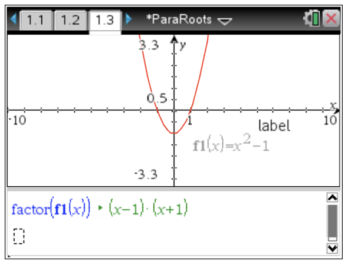
(a)
Consider the function, \(f\left(x\right)=x^2+x-2\text{.}\) Open the ParaRoots.tns document. On page 1.3 of the file has a split screen with a Notes page on the bottom with the factored form of the equation and a Graphs page on the top. First, label the \(x\)-intercepts of the equation so that you can see them as you explore the activity. To do this, press menu and 8:Geometry select the 1:Points & Lines submenu and choose 4:Intersection Point(s). Click on the parabola and then the \(x\)-axis. This will place a point at the intersection of the parabola and the axis. To see the coordinates of the \(x\)-intercepts, choose 7:Coordinates and Equations from the Actions submenu and click on each of the intersection points.
You are free to change any of the representations on the Graphs pane of the page found at the top, whether it is the graph itself or the symbolic representation of the function. As you change one representation of the function, everything else will change to match the alterations you have made. You can change the graph by either editing the expression for the function or by pulling and manipulating the graph itself. Take some time to explore the situation by manipulating the function, jotting down anything you discover or find interesting as you explore. Don’t forget to include some rough sketches of the graphs and the factored form of the function.
(b)
Describe patterns you noticed while manipulating the graph. Be explicit in stating your observations and include as much detail as possible. In particular, describe parts of the graph and factored form of the function that appeared to be related no matter how you manipulated the graph.
(c)
When you pull the graph above the \(x\)-axis, describe what happens to the factorization. Provide some examples of the graphs and expressions for the functions.
(d)
Make a hypothesis about any connections you see between the factored form of the function and the features found on the graph.
(e)
For each of the \(x\)-intercepts shown on the graph, describe what you notice when the \(x\)-coordinate is plugged into the factored form of the function. Be specific here and explain what happens to each factor as well as the resulting product. Explain how your observations are related to the features on the graph.
(f)
Describe how this activity addresses Aaron’s misconceptions from Activity 4.5.1.
2.
Suppose we have the equation \(2\left(x+3\right)^2-4=0\text{.}\)
(a)
Describe what could you do to both sides to get the squared quantity alone on the left side and perform the needed algebraic manipulations?
(b)
Describe what could you do to both sides so that you do not have a square in the equation and perform the needed algebraic manipulations?
(c)
Describe what could you do to get \(x\) alone on one side of the equation and perform the needed algebraic manipulations?
3.
In this exercise we will be exploring different forms of quadratic equations. Using the slider tool in GeoGebra, we will be able to manipulate graphs to find relationships between these different forms. In the first part of this investigation, we will use a GeoGebra file has two quadratic functions written in different forms. There are three sliders placed on the screen that are the parameters of the function of the form \(f\left(x\right)=a\left(x-h\right)^2+k\) (see Figure 4.5.15).
Figure4.5.15.Visually Completing the Square
(a)
The original function is given as \(f\left(x\right)\text{.}\) Start by moving the slider for parameter \(a\) sketching what happens to \(g\left(x\right)\text{.}\) Repeat this process for both \(h\) and \(k\) sketching records of the graph’s behavior with each manipulation. Describe the effect on the graph that each of the parameters (\(a\text{,}\)\(h\) and \(k\)) has on the graph?
(b)
Now use the sliders to place \(g\left(x\right)\) on top of \(f\left(x\right)\text{.}\) What values did you get for \(a\text{,}\)\(h\) and \(k\text{?}\) What are the coordinates of the vertex?
(c)
Use your CAS to expand \(g\left(x\right)\text{.}\) Describe what you notice about the resulting expression.
(d)
Now go back to the graph and change \(f\left(x\right)\) to \(2x^2-4x+5\text{.}\) Repeat your process for parts (b) and (c) to see if you find a similar result. Record your findings, explaining your observations including the location of the vertex.
(e)
Based on your observations, explain how you can find the location of the vertex if you have a quadratic function given in the form \(f\left(x\right)=a\left(x-h\right)^2+k\text{.}\)
(f)
We now need to justify our observations about the location of the vertex when the function is of the form \(f\left(x\right)=a\left(x-h\right)^2+k\text{.}\) As you noticed earlier, if \(a\gt 0\) (\(a\) is positive), the parabola opens up. If the parabola opens up, then the vertex is the lowest point on the graph. Now consider the smallest output you can expect from the function. Since \(a\gt 0\) and \(\left(x-h\right)^2 \geq 0\text{,}\) then \(a\left(x-h\right)^2 \geq 0\text{.}\) Therefore we are adding \(a\left(x-h\right)^2\) (a positive or zero number) to \(k\) in the function \(f\left(x\right)=a\left(x-h\right)^2+k\text{.}\) So what is the smallest number we can add to \(k\) here and what would be the corresponding value of \(x\) that will make \(a\left(x-h\right)^2\) equal to this smallest number? Compare this value of \(x\) to the \(x\)-coordinate of the vertex you conjectured from your observations. Explain what you notice.
(g)
We can now use a similar argument for the case where \(a\lt 0\) and the parabola opens down. In this case the vertex is the highest point on the graph and the value you are adding to \(k\) is either negative or zero. Use this information to explain how you can find the \(x\)-coordinate of the vertex for a parabola of the form \(f\left(x\right)=a\left(x-h\right)^2+k\) with \(a\lt 0\text{.}\)
4.
In Exercise 3, we explored how to identify the vertex of a parabola when it is given in the form \(f\left(x\right)=a\left(x-h\right)^2+k\text{.}\) At this point, we would like to use what we have discovered in Exercises 2 and 3 to try develop a process for solving a quadratic equation that cannot be easily factored.
Based on our work from Exercise 2, if we can get a quadratic function of the form \(f\left(x\right)=ax^2+bx+c\) into the form \(f\left(x\right)=a\left(x-h\right)^2+k\text{,}\) we can then solve \(f\left(x\right)=0\) fairly easily using the process we discovered in Exercise 2. So the question now becomes, how can we express the general quadratic \(f\left(x\right)=ax^2+bx+c\) in the form \(f\left(x\right)=a\left(x-h\right)^2+k\) without having to use a graph and slider every time? To answer this question, consider the graph found in Figure 4.5.16.
Figure4.5.16.Shifting Parabolas
(a)
Adjust the value of \(c\) several times and record the coordinates of the vertex in each case sketching several cases. Describe what you notice about the coordinates of the different vertices?
(b)
Now suppose you have two different functions \(f\left(x\right)=3x^2+6x+2\) and \(g\left(x\right)=3x^2+6x\text{.}\) Based solely on the algebraic expressions for the functions, which one do you think would be easier to use to find the \(x\)-intercepts of the graph? Why? [Hint: Which is easier to factor?]
(c)
Once you know both of the \(x\)-intercepts, explain how you might use them to find the \(x\)-coordinate of the vertex. [Hint: Your approach might be average, but it will do the trick]
(d)
Suppose you have the general quadratic function \(f\left(x\right)=ax^2+bx+c\text{.}\) What value of \(c\) will make it easiest to find the \(x\)-coordinate of the vertex? Use your method from parts (b) and (c) to find an expression for the \(x\)-coordinate of the vertex for \(f\left(x\right)=ax^2+bx+c\text{.}\)
(e)
The expression you found in part (d) is the \(h\) in \(f\left(x\right)=a\left(x-h\right)^2+k\text{.}\) To find an expression for \(k\text{,}\) recall that \(h\) makes the expression \(a\left(x-h\right)^2=0\) and so \(f\left(h\right)=k\text{.}\) To find an expression for \(k\text{,}\) simply enter the expression for \(h\) that you found in part (d) into the function \(f\left(x\right)=ax^2+bx+c\text{.}\) You can do this on CAS where \(f\) has been already defined as \(f\left(x\right)=ax^2+bx+c\) by simply entering f () where is just your expression for \(h\) in terms of \(a\) and \(b\) (recall that \(h\) should not depend on \(c\)). Enter your expressions for \(h\) and \(k\) in terms of \(a\text{,}\)\(b\text{,}\) and \(c\) into the expression below to show how you can take any quadratic function of the form \(f\left(x\right)=ax^2+bx+c\) and rewrite it in the form \(f\left(x\right)=a\left(x-h\right)^2+k\text{.}\)
Use the expand command on your CAS to expand the expression \(a\cdot \left(x-h\right)^2+k\text{.}\) Given the result of your expansion and the fact that \(\left(h,k\right)\) is the vertex of the parabola, find an expression for the \(x\)-coordinate of the vertex in terms of \(a\text{,}\)\(b\text{,}\) and \(c\text{.}\) Does it match what you found from part (e)? Explain.
(g)
Given the result of your expansion and the fact that \(\left(h,k\right)\) is the vertex of the parabola, find an expression for the \(y\)-coordinate of the vertex in terms of \(a\text{,}\)\(b\text{,}\) and \(c\text{.}\) Does it match what you found from part (e)? Explain.
(h)
Use what you have found in part (e) to write the equation \(ax^2+bx+c=0\) in vertex form and then solve it for \(x\) in terms of \(a\text{,}\)\(b\text{,}\) and \(c\) using the process you developed in Exercise 2. The result of your work here is called the Quadratic Formula.